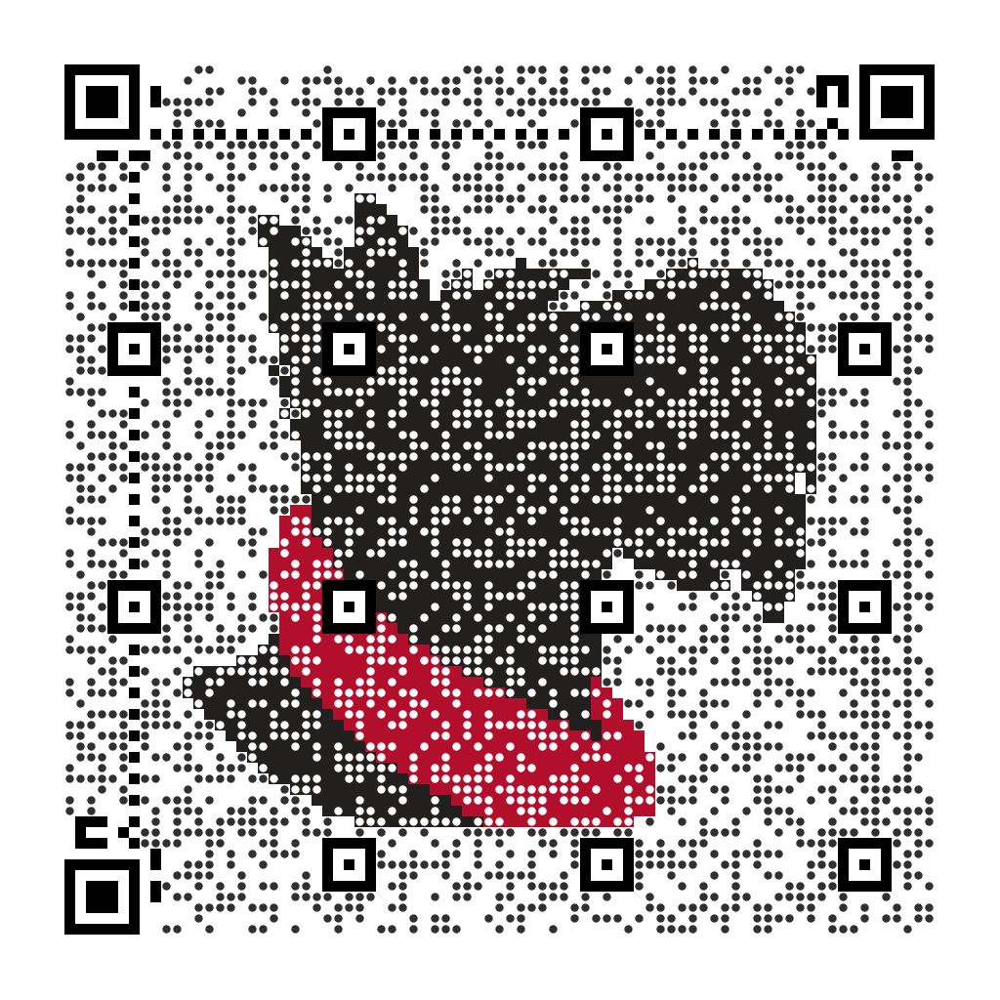
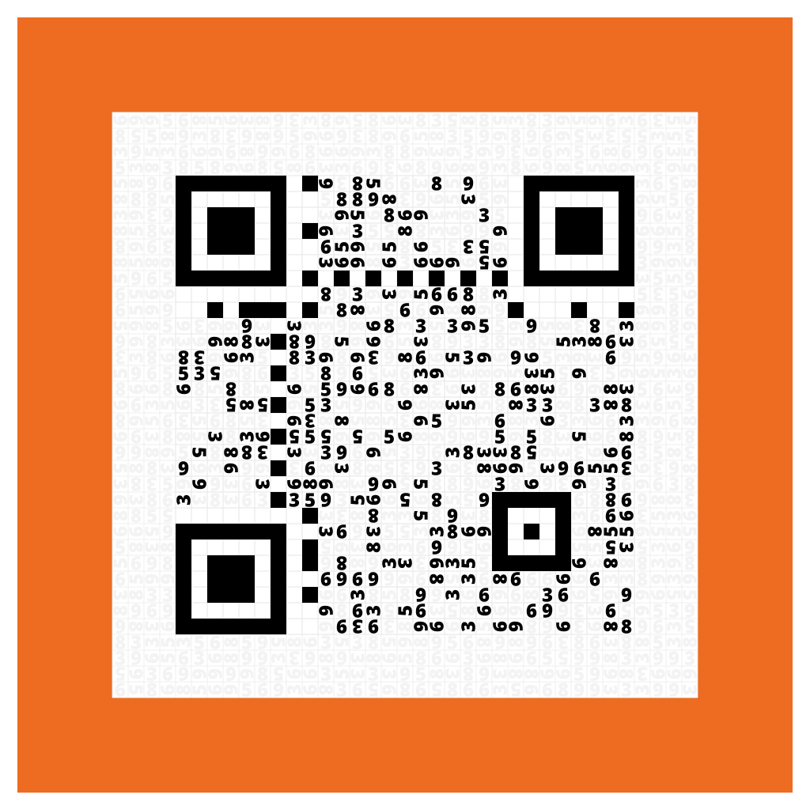
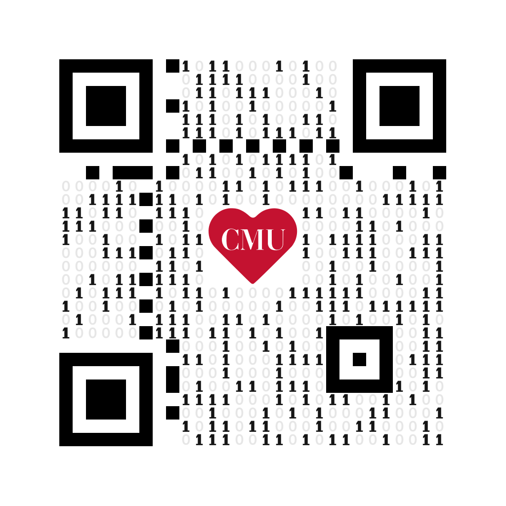
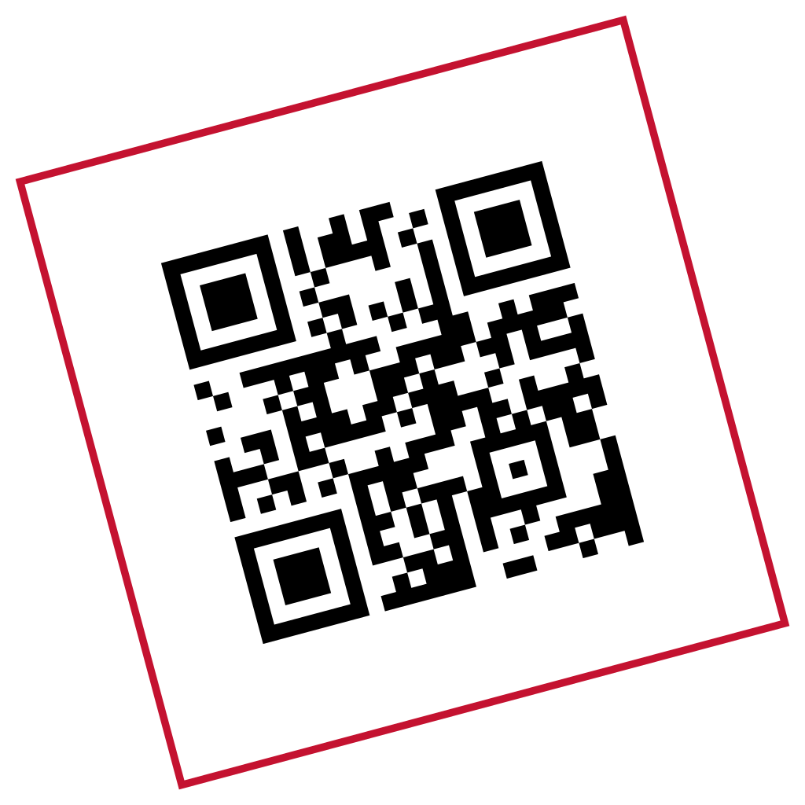
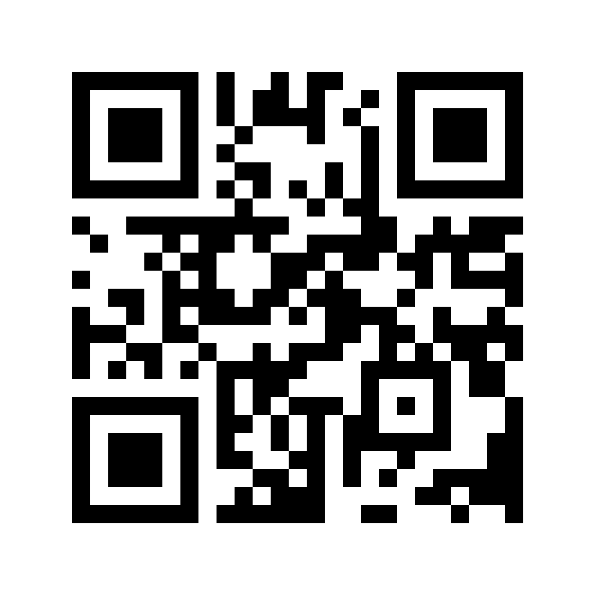

Customize Your QR Code
Choose a design, decide what it opens and pick a size and file type for where it goes. Each example below opens the Builder with that style selected.
On This Page
Choose a Style
Each design has a story. Read a little more about each style's history.

Scotty Portraits
Mosaic Scotty
Scotty and his red scarf formed from the QR code's dots. Use a larger image to keep the portrait clear.
Scotty Portraits
Basic Scotty
A Scotty portrait inside a QR code made of black squares, with room for the artwork in the center.

Campus Landmarks
Kraus Campo
Numbered tiles inspired by the campus garden, with optional text incorporated into the orange frame.
Campus Landmarks
Wean Hall
Wean Hall's brutalist facade, turtle-head entrance and its former orange sculpture.

Carnegie Mellon Marks
Binary Heart
Ones and zeros surrounding the red CMU heart. A detailed design for larger exports.
Carnegie Mellon Marks
Block Monogram
The historic Carnegie-Mellon block monogram, with the QR code replacing the M.

Carnegie Mellon Marks
Tilted Square
A QR code turned inside a red square outline, echoing the university's tilted-square mark.

Simple and Classic
Basic Black
Black squares on white, without added artwork. Good for small spaces.
Simple and Classic
Center Icon
A black QR code with a red center icon. Choose an icon in the Builder to match the content.
Choose What It Opens
The Builder turns the details you enter into the right kind of QR code. Choose what someone should be able to do after scanning it.
| Content Type | What to Expect | Try It |
|---|---|---|
| Link or Text | Open a link or show the text you supply. | Add a Link |
| Contact Card | Offer to save contact details. | Add a Contact |
| Event | Offer to add an event to a calendar. | Add an Event |
| Start an email with the address, subject and message filled in. | Start an Email | |
| Phone Call | Offer to call the number you enter. | Add a Number |
| Map Location | Open a location in Google Maps, Apple Maps or OpenStreetMap, whichever you pick. | Choose a Place |
| Wi-Fi Network | Share a CMU network or its connection instructions. See the note below. | Choose a Network |
What happens after a scan depends on the phone and its apps. Contact cards and events hold more information than a short link, so their codes are denser. Give them a larger size.
Note
CMU-SECURE and eduroam codes open Computing Services' connection instructions. They don't join the network. CMU-DEVICE is for registered devices without a browser. CMU-GUEST requires an access code from faculty or staff.
Add Text or an Icon
Add a line of text above or below the QR code to tell people what it opens. Each line takes up to 40 characters, including letters, numbers, spaces and common punctuation. The Builder previews the result.
Text usually makes the image taller. Kraus Campo puts it inside its orange frame instead. Keep the exported proportions when placing the image.
With Center Icon, choose a symbol that suggests the destination, like a calendar or a Wi-Fi icon. The icon is only a hint. What you enter decides what the code opens.
Choose a Width
Start detailed designs at 1024 pixels. More content produces a denser QR code, and a small export may leave too little room for its dots or artwork. The Builder raises a size that is too small for the content and style.
The width includes the code's margin and any surrounding design. Text above or below can add height. A bigger file doesn't mean it scans from farther away, so check the code at the size and distance where people will use it.
Choose a File Type
| Format | Use It For |
|---|---|
| SVG | Print layouts and web pages. Vector shapes stay sharp when scaled. |
| PNG | Slides, email and documents that don't take SVG. Export enough pixels for the size you'll use. |
Check Before You Share
- Keep the image intact. Preserve its proportions and the space around the QR code. Don't stretch it or crop away its margin.
- Give dense QR codes more room. Use a shorter link or a larger image.
- Test the finished layout. Scan the sign, slide or label at its intended size and distance.
- Check what opens. Confirm the link opens or the contact, event or network details are correct.